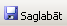
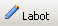

Degvielas pasūtījums¶
Lai izveidotu jaunu degvielas pasūtījumu:
{kind=link}
Pasūtījums uz: datums, uz kuru tiks veikst pasūtījums;
Degvielas bāze: nodefinētā degvielas bāza (ar bultiņu iespējams atvērt sarakstu);
Piegādāt: ja pasūtījums netiks piegādāts ar pašu piegādātāju, tad jāieliek ķeksītis;
Autopārvadātājs: pārvadātāja uzņēmums;
Automašīna: automašīna (reģ.Nr);
Autovadītājs: autovadītājs (ja automašīnai ir piesaistīts vadītājs, tad, izvēloties automašīnu, vadītājs tiek pievienots pasūtījumam kā autovadītājs);
Apmaksa: apmaksa tiek sasaistīta ar līgumā nodefinētajiem nosacījumiem par apmaksas termiņu (ja ļīgumā nav nodefinēts termiņš, tad ir iespējams izvēlēties apmaksas termiņu).
Kad visi dati ievadīti, rīku joslā jānospiež poga  .
{kind=link}
Lai pievienotu pasūtījuma saturu, jānospiež poga :
{kind=link}
{kind=link}
Izkraušanas adrese: pasūtījuma izkraušanas adrese;
Tvertne: nodefinētā tvertne no tvertņu saraksta (ja izkraušanas adresei nav piesaistīta izvēlētā tvertne, tiks parādīts ziņojums par neatbilstību);
Degvielas marka: degvielas marka, kura ir nodefinēta pie izvēlētās tvertnes;
Cena (Ls/litrā): piedāvātā cena lati/litrā;
Daudzums (litri): pasūtījuma daudzums litros;
Summa: apmaksas summa;
Nospiežot pogu Pievienot, pasūtījuma saturs tiks pievienots pasūtījumam. Lai pievienotu jaunu pasūtījuma saturu, atkal jānospiež poga un jāaizpilda saturs.
 Lai veiktu citas darbības ar pasūtījumu un tā
saturu:
Lai veiktu citas darbības ar pasūtījumu un tā
saturu:
{kind=link}
Ja ir nepieciešams dzēst visu pasūtījumu,
rīku joslā jānospiež poga  un tad turpat rīku
joslā jānospiež poga .
{kind=link}
{kind=link}
Visi izveidotie pasūtījumi tiek saglabāti sadaļā dokumenti Pasūtījumu žurnālā .